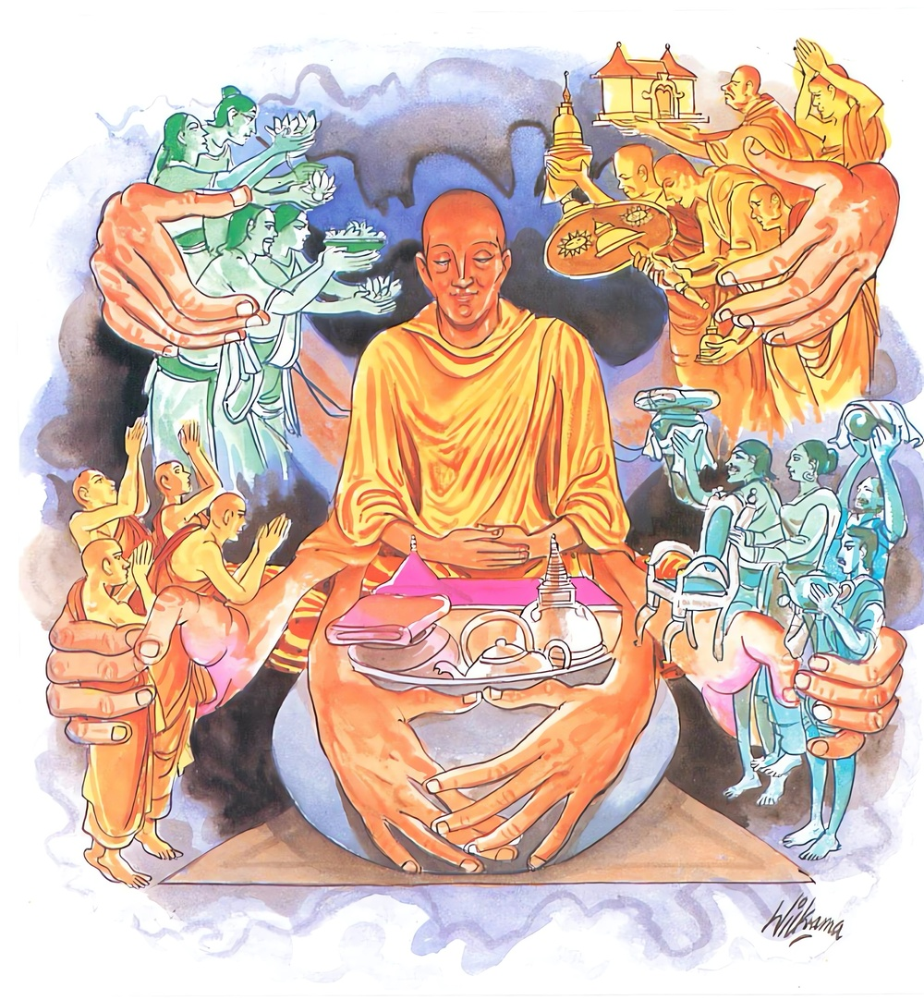
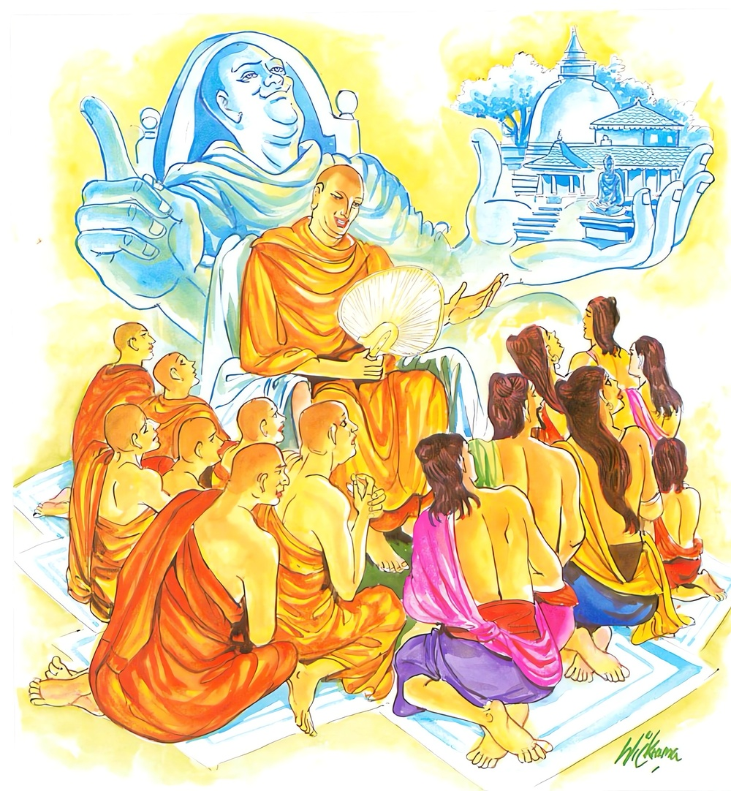

5-14 දහහතරවන සුධම්ම තෙරුන්ගේ වස්තුවයි.
මෙම කතාව සද්ධර්ම සාගරයෙන් ද කියවන්න.
අසතං භාවනමිච්ඡෙය්ය පුරෙක්ඛාරඤ්ච භික්ඛුසු
ආවාසෙසු ච ඉස්සරියං පූජා පරකුලෙසු ච.
අඥාන භික්ෂූ තෙම නුසුදුසු බුහුමන් ද, භික්ෂූන් පිරිවැරීම ද, සඞ්ඝිකාවාසයෙහි ඉසුරු බව ද, අන් උපාසකකුලයන්හි ප්රත්යය පූජාව ද කැමැති වෙයි.

මමෙව කත මඤ්ඤන්තූ ගිහී පබ්බජිතා උභො
මමෙව අතිවසා අස්සු කිච්චාකිච්චෙසු කිස්මිචි
ඉති බාලස්ස සංකප්පො ඉච්ඡා මානො ච වඩ්ඪති.
‘ගිහි පැවැදි දෙකොටස විහාරයෙහි හැම කටයුතු මා විසින් කරණ ලදැ යි සිතත් වා, කිසියම් කුදු මහත් කටයුතු මා විචාරා ම කෙරෙත්වා’යි මෙසේ බාලයාහට විතර්ක ද තෘෂ්ණා ද උපදනේ ය. එයින් ඔහුගේ මානය වැඩෙයි.

අසතං භාවනමිච්ඡෙය්ය ආදි මේ ධර්මදේශනාව බුදුරදුන් දෙව්රම වැඩසිටින කාලයේ සුධම්ම තෙරුන් අරභයා දේශනා කළසේක. දේශනාව මච්ඡිකාසණ්ඩයෙහි පටන්ගෙන සැවැත්නුවරදී අවසන්වූවකි. මච්ඡිකාසණ්ඩ නගරයෙහි චිත්ත නම් ගෘහපතියා පස්වගමහණුන් අතරවූ මහානාම තෙරුන් පිඬුසිඟා යනුදැක උන්වහන්සේගේ ඉරියව් පැවැත්වීම පිළිබඳව පැහැදී පාත්රය රැගෙන, ගෙට කැඳවා වළඳවා බත්කිස අවසන්හි දැහැමිකථා අසන්නේ සෝවාන්ඵලයට පැමිණ අචල ශ්රද්ධාවතෙක්ව අම්බාටකවන නම්වූ තමන්ගේ උයන සංඝාරාමයක් කරනුකැමතිව තෙරුන් අතපැන් වත්කර පිළිගැන්වීය.
එකෙණෙහි බුදුසසුන පිහිටියේයයි ජලය කෙළවරකොට ඇති මහපොළොව කම්පාවී ගියේය. මහසිටුවරයා උයනෙහි මහා විහාරයක්කොට නිමවා සියලු දිසාවලින් පැමිණි භික්ෂූන්ට විවෘතකොට තැබීය. මච්ඡිකාසණ්ඩයෙහි නේවාසික සුධම්ම නම් තෙරකෙනෙක් වූහ. පසු කලෙක චිත්ත ගෘහපතියාගේ ගුණකථාව අසා අගසවු දෙනම ඔහුට සංග්රහ කරනු කැමැත්තෙන් මච්ඡිකාසණ්ඩය බලා වැඩමවූහ. චිත්ත ගෘහපතිතෙම උන්වහන්සේලාගේ ආගමනය ගැන අසා අඩයොදුනක් පෙරගමන්කොට උන්වහන්සේලා පිළිගෙන තමන්ගේ විහාරස්ථානයට වැඩමවා ආගන්තුකවතාවත්කොට, ස්වාමීනි, බණටිකක් අසනු කැමැත්තෙමියි ධර්මසේනාපතීන්වූ සැරියුත් හිමියන්ගෙන් ඉල්ලා සිටියේය.
ඉන්පසු ඔහුට තෙරුන්වහන්සේ, උපාසකතුමනි, ඇත්තෙන්ම අපි ක්ලාන්තගතියෙන් සිටින්නෙමු. එහෙත් බණටිකක් අසන්නැයි ධර්මකථාවක් දෙසූහ. හෙතෙම තෙරුන්ගේ ධර්මකථාව අසනගමන්ම අනාගාමීඵලයෙහි පිහිටියේය. හෙතෙම අගසවු දෙනම වැඳ, ස්වාමීනි, හෙට භික්ෂූන් දහසකුත් සමග මාගේ ගෙදර භික්ෂාව ගනුමැනවයි ආරාධනාකොට, පසුව නේවාසික සුධම්ම තෙරුන්ටද, ස්වාමීනි, ඔබවහන්සේත් තෙරවරුන් සමග වඩිනු මැනවයි ආරාධනා කෙළේය. සුධම්ම තෙරණුවෝ, මෙතෙම මට පසුව ආරාධනා කෙළේයයි කිපී ප්රතික්ෂේප කළ විට නැවත නැවතත් ඉල්ලා සිටියේ නමුදු ප්රතික්ෂේපම කළහ. උපාසක තෙම එසේ නම් ස්වාමීනි, ඔබවහන්සේම මෙයින් ප්රකටවනු ඇතැයි කියා ගොස් දෙවෙනි දවසේ තම නිවසෙහි මහාදානයක් පිළියෙල කෙළේය.
සුධම්ම තෙරණුවෝත් මේ ගෘහපතියා අගසව් දෙනමට කෙබඳු අයුරකින් සත්කාර සම්මාන සූදානම්කර ඇද්දැයි හෙට ගොස් බලන්නෙමියි සිතා උදෑසනම පාසිවුරු රැගෙන ඔහුගේ ගෙට ගියෝය. ගෘහපතියා විසින් ස්වාමීනි වැඩහිඳිනු මැනවැයි කියද්දීම මම හිඳ නොගන්නෙමි, පිඬුසිඟා යන්නෙමියි කියා අගසවුවන් වෙනුවෙන් පිළියෙල කළ සත්කාර දෙස බලා ගෘහපතියා ජාතිය කියාපෑමෙන් ගටවනු සඳහා ගෘහපතිය, ඔබේ සත්කාරය නම් මහ උදාරයි. එහෙත් මෙහි එකක් නම් අඩුයයි කීවාහුය. ස්වාමීනි, ඒ කුමක්ද? ගෘහපතිය තලගුළියයි කියා ගෘහපතියා විසින් කාකෝපමාවෙන් කථාව ප්රතික්ෂේප කළ පසු කිපී, ගෘහපතිය මෙන්න ඔබේ ආවාසය, මම යන්නෙමියි කියා තෙවෙනිවර දක්වාත් වැළැක්වූ නමුදු නොනැවතී බුදුන් ළඟට ගොස් චිත්ත ගෘහපතියාත් තමනුත් අතර හුවමාරුවූ වචන දන්වා සිටියේය.
ශාස්තෘන්වහන්සේ, තොප විසින් සැදැහැයෙන් පැහැදුණු උපාසකවරයා, හීන වචන කීමෙන් කලකිරවන ලද්දේ යයි ඔහු වෙතම දෝෂය පවරා පටිසාරණීය නම් විනයකර්මය කරවා, යව ගොස් චිත්ත ගෘහපති ක්ෂමා කරවා ගන්නැයි යැවීය. සුධම්ම ස්ථවිරතෙම ආපසු ගොස්, ගෘහපති අමතා ගෘහපතිය, දෝෂය මගේමයි මට සමාව දෙන්නැයි කීවේ නමුත් නැහැ මා ක්ෂමාව දෙන්නේ නැතැයි කීවිට හැකිළීගොස් ක්ෂමාකරවාගත නොහැකිවිය. නැවතත් බුදුන් සමීපයට පැමිණියේය. බුදුරජාණන්වහන්සේ, මොහුට සමාව නොදෙන්නේයයි දැනදැනත් මානයෙන් තදවී ගිය මොහු තිස්යොදුන් මග ගෙවා ගොස් නැවත ආපසු පැමිණේවායි ක්ෂමා කරවා ගන්නා උපාය නොකියාම පිටත්කර හැරිසේක. ඉන්පසු ඔහු නැවත ආකල නිහතමානවූ ඔහුට දෙවෙනි දූතයකුදු දී යව, මොහුත් සමග ගොස් උපාසකයා ක්ෂමාකරවා ගන්නැයි කියා, ශ්රමණයා විසින් මගේ විහාරය, මා නවතින තැන, මගේ දායකයා, මගේ දායිකාව ආදී වශයෙන් සිතා මානය හෝ ඊර්ෂ්යාව ආදියද කෙලෙස්ද වැඩෙතියි පූර්වාපරසන්ධි ගළපා දහම් දෙසනසේක් මේ ගාථාද වදාළහ:
මා සිල්වතෙකියි මා සැදැහැතියයි
සියලුදෙනා පිළිගතයුතුයයි
සියලුදෙනා මා පිරිවර කොටගෙන
හැසිරෙත්වයි නිරතුරු පතනා
විහාර පන්සල් හැමතැන් හැමදෙන
හොඳදේ මට දියයුතුයයි සිතමින්
සිටින බාලයා අතුරක් නැතිවම
දුකෙන් දොම්නසින් පෙළීසිටියි
මා මයි හපනා පැවිදි ගිහින් ළඟ
මට ඉහළින් කිසිවකු නොමැතේ
මෙබඳු සිතුම් ඇති මෝඩ බාලයා
දහමින් තපසින් පිරිහී යයි
ඉසි මන් දුර්ගුණ වැඩිවැඩි යෑමෙන්
පිරිහීමේ මරුකකට වැටෙයි
එහි අසතං යනු සම්භාව්ය තත්ත්වයක් නැති බාලයායි. ඉච්ඡෙය්ය යනු සැදැහැ නැතිව සිටිමින් මා සැදැහැවතෙකියි ජනයා දැනගනිත්වායි බලාපොරොත්තුවෙයි. පාපී කල්පනා ඇති, නිර්දෙශපාළියේ කීඅයුරු සැදැහැනැති දුස්සීල, උනන්දුවක් නැති, විවේක සිතක් නැති, කම්මැලි, එළඹසිටිසිහියෙන් තොර, සමාධිගත ඉන්ද්රියයන් නැති, නුනුවණ, අර්හත් නොවීම රහත්යයි අනිත් අය පිළිගනිත්වායි මෙසේ සම්භාව්ය තත්ත්වයක් නැතිව එම තත්ත්වය ප්රාර්ථනාකරන බාලඅඥානයායි. පුරෙක්ඛාරං යනු පිරිවරයි. අපොයි සියලු විහාරයන්හි භික්ෂූහු මා පිරිවරා මගෙන් නොයෙක් ප්රශ්න විචාරමින් හැසිරෙන්නාහු නම් යෙහෙකි. මෙබඳු පැතුම් ඇතිව පෙරටුව සිටීමයි. භික්ඛුසු භික්ෂූන් කෙරෙහි මෙබඳු කල්පනා ඇතිව සිටියි. ආවාසෙසු යනු සාංඝික ආවාසයන්හි විහාරස්ථාන මැද තිබෙන හොඳහොඳ සැපපහසු ඇති සෙනසුන් වෙයි නම් ඒවා තමන්ගේ දැක පුරුදු, ආශ්රයෙන් පුරුදු භික්ෂූන්ට තෙපි මෙහි වසව්යයි පරිත්යාගකරමින් තමනුත් එබඳු සෙනසුන් පරිභොගකරමින් සෙසු ආගන්තුකාදි භික්ෂූන්ට අන්තිම වශයෙන් ගලින් බැඳි සේනාසනත් අමනුෂ්යයන් අරක්ගත් සෙනසුනුත් දෙමින් තෙපි මෙහි වසව්යයි විමසමින් හැසිරෙමින් ආවාස පිළිබඳ ඉසුරුමත් බවයි.
පූජා පරකුලෙසුච යනු මවුපියන්ගෙනුත් නොව නෑදැයන්ගෙනුත් නොව පරකුලයන්ගෙන් ලැබෙනදේ මටම දේනම් මැනවි. අනුන්ටදීම නුසුදුසුයයි සිව්පසය පිළිබඳ පූජා කැමතිවීමයි. මාමෙව කතමඤ්ඤන්තු යනු යම්කිසි බාලයෙකුට කිසියම් විහාරයක උපෝසථාගාර කිරීම් ආදි කරනු ලබන නවකර්මාන්ත සියල්ල අපේ තෙරණුවන් විසින් කර අවසන් කරනලදැයි මෙසේ ගිහී ච පබ්බජිතා ච උභො ගිහි පැවිදි දෙපක්ෂයම මා නිසාම කරනලදැයි ද නිමකන ලදැයිද දැනගනිත්වා යන සංකල්පය උපදී. මමවෙ අතිවාසා අස්සු යනු ගිහි පැවිදි සියල්ලෝ මාගේ වසඟයෙහි වසන්නෝ වෙත්වා. ගැල් ගොන් වෑ පොරෝ ආදීවූ ලැබියයුතුදේ වෙයිද යටත් පිරිසෙයින් කැඳ ටිකක් රත්කර පෙවීම වැනිදේ පවා කිච්චාකිච්චෙසු කුදුමහත්කටයුතු පිළිබඳවද මා වසඟයෙහිම පවතීවා, මගෙන් විමසාබලාම කරනු ලැබෙත්වායි සංකල්ප උපදී. ඉති බාලස්ස යනු යම් බාලයෙකුට යම්බඳු බලාපොරොත්තුද මෙවැනි සංකප්පො සංකල්ප උපදීද ඔහුට විපස්සනාදි භාවනාවක් නැත. මඟඵල නොවැඩේ. හුදෙක් ඔහුට සඳ නැගෙනවිට මුහුදේ ජලයමෙන් සදොරින් උපදනා තෘෂ්ණාද, නවවැදෑරුම් මානොව වඩ්ඪතීති මානයද වැඩෙන්නේය.
දේශනා කෙළවර බොහෝ දෙනා සෝවාන් ඵලාදියෙහි පිහිටියාහුය.
සුධම්ම තෙරණුවෝත් මේ අවවාද අසා බුදුන් වැඳ අසුනින් නැගිට ප්රදක්ෂිණාකොට ඒ අනුදූත භික්ෂුව සමග ගොස් උපාසකයාගේ ඇස්ඉදිරිපිට ඇවතට පිළියම් යොදා උපාසකයන් ක්ෂමාකරවා ගත්තේය. හෙතෙම උපාසකයා විසින් ස්වාමීනි, මම ක්ෂමා කරමි. ඉදින් මාගේ වැරැද්දක් ඇත්නම් මටත් සමාවුව මැනවැයි තමනුත් ක්ෂමා කරවාගෙන බුදුන් විසින් දෙනු ලැබූ අවවාදයෙහි පිහිටා කීපදිනක්ම සිව්පිළිසිඹියාත් සමග රහත්බවට පැමිණියාහුය.
උපාසක තෙමේත් මම බුදුන් නොදැකම, සෝවාන්ඵලයටත්, නොදැකම අනාගාමී ඵලයටත් පැමිණියෙමි. දැන් බුදුන් දැකියයුුයයි සිතීය. හෙතෙම තල සහල් වෙඬරු පැණි වස්ත්ර ඇතිරලි ආදිය පිරවූ ගැල්පන්සීයක් යොදවා බුදුන් දකිනුකැමැත්තෝ එත්වා, පිණ්ඩපාතාදියෙන් පීඩාවක් නොවන්නේයයි භික්ෂුසංඝයාටද භික්ෂුණීන්ටද, උපාසක උපාසිකාවන්ටද දන්වා යැවීය. ඔහු සමග පන්සීය පන්සීය බැගින් භික්ෂු භික්ෂුණී උපාසක උපාසිකාවෝ නික්මුණාහුය. හෙතෙම ඔවුන්ටත් තමන්ගේ පිරිසටත් යන තුන්දහසක් පමණවූ ජනයාට තිස්යොදුනක් පමණ මගදී කිසි පීඩාවක් නොවන අයුරින් අවශ්ය කටයුතු සංවිධානය කෙළේය. ඔහු නික්මුණුබව අසා යොදුනක් පාසා දෙවිවරු කඳවුරු බැඳ දිව්යමය වූ කැඳබත් කැවිලි බීම ආදියෙන් මහාජනයාට උපස්ථාන කළහ.
කිසිවෙකුටත් කිනම් හෝ පීඩාවක් නොවීය. මෙසේ දෙවියන්ගෙන් උපස්ථාන ලබමින් දිනකට යොදුන බැගින් යන්නේ මසකින් සැවතට පැමිණියාහුය. පන්සීයක් ගැල් බඩුපිරූ සැටියේම තිබුණේය. දෙවියන් හා මිනිසුන් විසින් ගෙනා පුදපඬුරුවලින්ම ගමන සිදුවිය. බුදුරජාණන්වහන්සේ අනඳතෙරුන් අමතා, ආනන්ද අද සවස් වේලාවෙහි චිත්ත ගෘහපතියා පන්සීයක් උපාසකවරුන්ද පිරිවරා අවුත් මා වඳින්නේයයි වදාළහ.
ස්වාමීනි, කිම: ඔහු ඔබවහන්සේට වඳිනකාලයෙහි කිසියම් ප්රාතිහාර්යයක් වන්නේද? ආනන්ද එසේ වන්නේය. ස්වාමීනි ඒ කුමක්ද? ඔහු අවුත් මා වඳිනකාලයෙහි එක්යාළ දොළොසාමුණක් පමණ බිම්ප්රදේශයෙහි දණක්පමණ ගණකම ඇති පස්වණක්මලින් පිරීයන සේ ඝනවර්ෂාවක් වසින්නේය. මේ කථාව අසා නුවර වැසියෝ මෙබඳු මහ පිනැති චිත්ත ගෘහපති අවුත් අද බුදුන් වඳියි. මෙබඳු ප්රාතිහාර්යයක් වන්නේය. අපිත් ඒ මහ පින්වතා දැකගැනීමට වාසනාව ලබන්නෙමුයයි පුදපඬුරු රැගෙන පාරදෙපස සිටියාහුය. විහාරය සමීපයට ආ කල පන්සීයක් භික්ෂූහු ප්රථමයෙන් වැඩියාහුය. චිත්ත ගෘහපතියා, මෑණිවරුනි, නුඹලා පසුව එන්නැයි පන්සීයක් උපාසකවරු පිරිවරා බුදුන් ළඟට ගියේය.
බුදුන් හමුවෙහි සිටින විට සිටගෙන හෝ ඉඳගෙන සිටියත් ඉදිරියෙන්ම හෝ පිටුපසින්ම නොසිටිති. ඉදිරියෙහි ඇති බුද්ධවීථියෙහි නොසිට දෙපසටවී නිසසලව සිටිත්, චිත්ත ගෘහපති නොපෑගූ බුද්ධවීථියට පැමිණියේය. ත්රිවිධඵලයට පැමිණි ආර්යශ්රාවකයා බැලුබැලූ හැමතැනම කම්පිත විය. චිත්ත ගෘහපති නම් මෙතෙමේයයි මහජනයා එදෙස බලාසිටියහ. හෙතෙම බුදුන්වෙත එළඹ සවණක් බුදුරැස් මැදට පැමිණ බුදුන්ගේ පාදයෙහි ගොප්ඇට මස අල්වා වැන්දේය. එකෙණෙහිම යටකී පරිදි මල්වැසි වැස්සේය. දහස් ගණන් සාදුකාර පැවැත්විණි. හෙතෙම එක් මසක් බුදුන් සමීපයෙහි වාසය කෙළේය. එසේ වාසයකරමින් බුදුන් ප්රමුඛ සියලු භික්ෂුසංඝයා විෂයෙහි විහාරයෙහිදීම මහා දානසත්කාර පැවැත්විය. තමන් සමග ආ පිරිසද විහාරයෙහිම නවත්වාගෙන පෝෂණය කෙළේය. එහෙත් එක් දවසක හෝ තමන්ගේ ගැල්වලින් ගෙනා උපකරණ ගැනීමක් නොවීය. දෙව්මිනිසුන් ගෙනා පුද පඬුරුවලින් හැම අවශ්යතාවක්ම ඉටුවිය.
චිත්ත ගෘහපතිතෙම බුදුන් වැඳ ස්වාමීනි, මම ඔබවහන්සේට දන් දෙන්නෙමියි සිතා එනවිට මාසයක්ම අතරමග ගතවිය. මෙහිදීත් මාසයක්ම ගෙවීගියේය. එහෙත් මා ගෙනා ද්රව්යවලින් කිසිවක් ගැනීමට අවශ්ය නොවීය. මෙතෙක් කල් දෙව්මිනිසුන් විසින් ගෙනෙනලද පුදපඬුරුවලින්ම දන් දුනිමි. ඒ මම මෙහි අවුරුද්දක් සිටියත් මගේ දානෝපකරණවලින්ම දනක් දීමට අවස්ථාව නොලබන්නෙමි. ගැල්වල බඩු හිස්කර යනු කැමැත්තෙමි. ඒ සඳහා සුදුසු තැනක් වදාළ මැනවැයි ඉල්ලා සිටියේය. බුදුරජාණන්වහන්සේ ආනන්ද හිමියන් අමතා, ආනන්ද, මේ උපාසකවරයාට එක් තැනක් හිස්කර දෙන්නැයි වදාළහ. තෙරණුවෝ එසේ කළහ. කැප බිමක්ම චිත්ත ගෘශපති වෙනුවෙන් අනුදත්හ. උපාසක තෙමේත් තමන් සමග ආ තුන්දහසක් පමණ ජනයාද සමග හිස්ගැල්ද රැගෙන මගට පිළිපන්හ.
දෙව්මිනිස්සු, ආර්යයෙනි, ඔබ හිස්ගැල් සමග ගමන් කරන්නෙහියයි සත්රුවනින් ගැල් පුරාලූහ. හෙතෙම තමන්වෙත ගෙනආ ද්රව්යවලින්ම මහාජනයා පෝෂණය කරමින් ගියේය. ආනන්ද තෙරණුවෝ බුදුන් වැඳ, ස්වාමීනි, ඔබවහන්සේ ළඟට එන විටත් මසක් ගතවිය. මෙහිත් මාසයක්ම විසීය. මෙතෙක් කල් තමන්ට ලැබුණු උපකරණවලින්ම මහදන් දුන්නේය. දැන් ගැල් පන්සීය හිස්කරගෙන මසකින් ආපසුයයි. දෙව්මිනිස්සු නැගී සිට ආර්යය, ඔබ හිස්වූ ගැල්පන්සීයත් රැගෙන ආපසු යන්නෙහියයි සත්රුවනින් ඒ ගැල් පුරවාලූහ. නැවත හෙතෙම තමන්ට ගෙනත්දුන් පුදපඬුරුවලින්ම මහාජනයා පෝෂණය කරමින් යන්නේය.
ස්වාමීනි, කිම? මොහු නුඹවහන්සේ වෙත පැමිණීම නිසාම මේ සත්කාර සම්මාන ඉපදුණේද? නැතහොත් වෙනත් තැනකට යතත් මේ සත්කාර උපදින්නේද? ආනන්ද, මා ළඟට එද්දීත්, වෙනත් තැනකට යද්දීත් ඔහුට සත්කාර උපදින්නේමය. මේ උපාසකතෙම සැදැහැවත්ය, සිල්වත්ය, පැහැදීම් ඇත්තෙක. ඔහු යම්පෙදෙසක් භජනය කරන්නේනම් ඒ ඒ හැමතැන ඔහුට ලාභසත්කාර උපදින්නේයයි වදාරා ශාස්තෘන්වහන්සේ ප්රකීර්ණක වර්ගයෙහි එන මේ ගාථාවද ප්රකාශ කළහ.
සැදෑ සිල් ගුණ ඇති
යසස් සම්පත්වලින් හොබනා
උතුමන් සිටින හැමතැන
පිදුමට යුතු බඳුන් වේ
මෙහි අර්ථය එයින්ම පැහැදිලිවේ. මෙසේ වදාළකල්හි ආනන්ද තෙරණුවෝ චිත්ත ගෘහපතියා පෙර කළකම් විචාළෝය. ඉන්පසු එය ප්රකටකරමින් බුදුරජාණන්වහන්සේ මෙසේ වදාළහ.
ආනන්ද, මේ උපාසක තෙම පියුමතුරා බුදුන්ගේ පාමුලදී කරනලද ප්රාර්ථනා ඇතිව කප්ලක්ෂයක් දෙව්මිනිස්සැප ලබා කාශ්යප බුදුන්කාලයෙහි මුවවැදි පවුලක ඉපදී වැඩිවියටපත්ව දිනක් වැසි පවත්නා අවස්ථාවේ මුවන් මරනු සඳහා සැතකුත් රැගෙන කැලෑවට ගොස් මුවන් සොයායන අතර එක්තරා ස්වාභාවික පර්වත පාමුලක හිස පටන් පෙරවාගෙන හිඳගෙන සිටින එක් භික්ෂුවක් දැක මේ එක් ආර්යනමක් මහණදම් පුරන්නේයයි සිතා මුන්වහන්සේට බත් ගෙනෙන්නෙමියි වේගයෙන් ගෙදර ගොස් එක් උදුනක ඊයේ ගෙනා මස්ද එක් උදුනක බත්ද උයවා තවත් පිඬුසිඟන භික්ෂූන් දැක උන්වහන්සේලාගේත් පාත්ර රැගෙන පැනවූ අසුන්වල වඩාහිඳුවා භික්ෂාව පිළියෙල කොට ආර්ය්යයන්වහන්සේලා වළඳවයි. තවත් කෙනෙකුට අණකොට බත් පොදියක් බැඳගෙන යන අතර අතරමගදී නොයෙක්මල් එකතුකොට ගොටුවක තබාගෙන (පොදියක් ලෙස) පළමු තෙරුන් සිටිතැනට ගොස් ස්වාමීනි, මට අනුකම්පා කරනුමැනවයි කියා පාත්රය ගෙන පුරවා තෙරුන් අත තබා ඒ මලින් පුදා යම්සේ, මේ රස අහරක් සමග මල් පූජාවෙන් මගේ සිත පිනාගියේද එසේ උපනුපන් තැන්වලදී පුදපඬුරු දහස්ගණනින් රැගෙන අවුත් මාගේ සිත පිනවා පස්වණක් මල්වැසි වසීවායි ප්රාර්ථනා තැබීය. හෙතෙම දිවිඇතිතාක් කුසල්කොට දෙව්ලොව උපන්නේය. උපනුපන් හැමතැන දිව්යමය මල්වැසි වැස්සේය. දැනුත් මොහු උපන් දිනයේද, දැන් මෙහි ආපසුද මල්වැසිද පුදපඬුරුද ගැල්පුරා සත්රුවන්ද එම පුණ්යකර්මයාගේ බලයෙන් උපන්නේය.